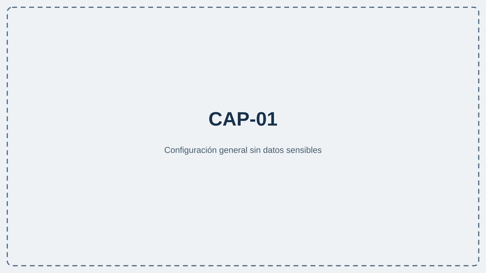
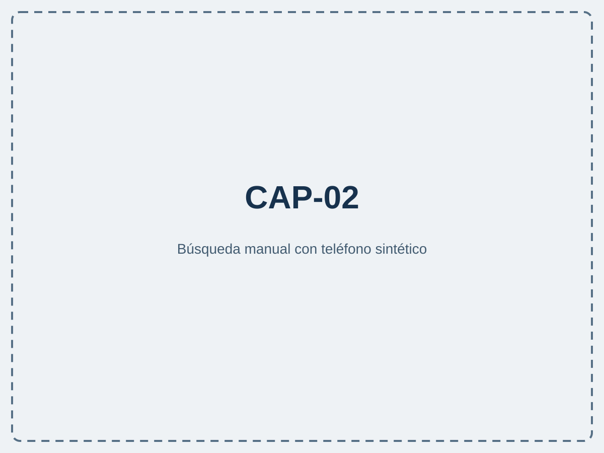
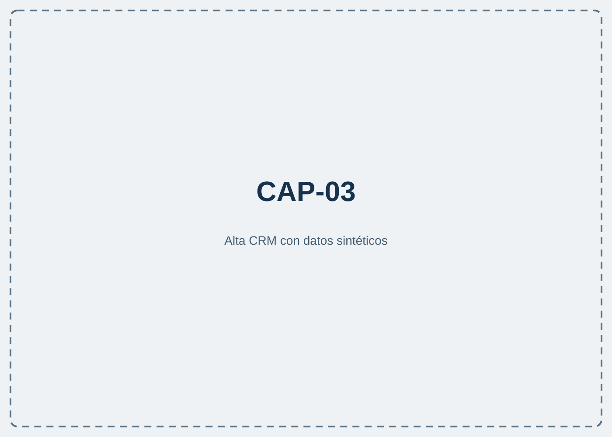
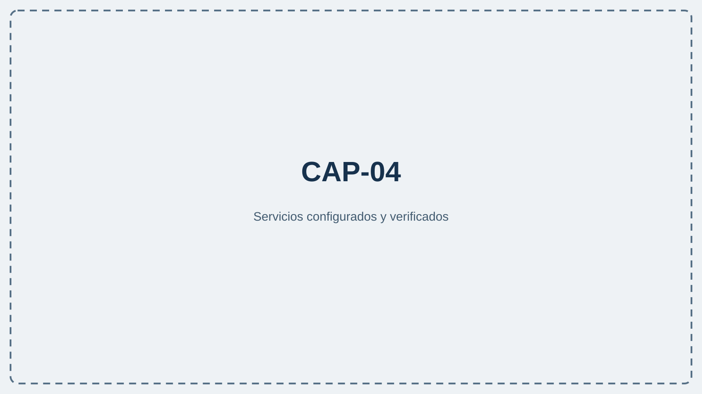

Folleto comercial · Borrador con capturas pendientes
Contexto de Teamleader para gestionar cada llamada con un flujo más ordenado.
Aplicación de escritorio para equipos que trabajan en Windows y utilizan Teamleader Focus. Relaciona teléfonos con información del CRM y permite añadir grabación y análisis con IA cuando la organización decide configurarlos. CLAIM-001: verified

Centralita IA Teamleader reúne la búsqueda del teléfono, la selección de contexto y la preparación de la nota en un flujo guiado. Las funciones disponibles dependen de la configuración, los permisos de Teamleader y los servicios opcionales activados.
CLAIM-002: verified
Qué permite conseguir. Buscar el teléfono entre contactos y empresas de Teamleader y presentar el contexto disponible en una prenota.
Ejemplo de uso. Ante una llamada o búsqueda manual, el usuario confirma el cliente y selecciona la oportunidad, ticket o nota pertinente.
Alcance y condiciones. Requiere Teamleader validado; los resultados dependen de permisos y datos existentes.

CLAIM-003: verified
Qué permite conseguir. Abrir un flujo de alta para preparar un contacto o una empresa cuando no hay coincidencia.
Ejemplo de uso. Un posible cliente llama por primera vez; el usuario completa y revisa los datos antes de decidir qué registro crear.
Alcance y condiciones. La información debe revisarse antes de guardar; no se presupone enriquecimiento automático externo.

CLAIM-004: verified
Qué permite conseguir. Elegir entre no grabar, grabación interna u OBS Studio y configurar IA si se desea analizar el audio.
Ejemplo de uso. Un equipo utiliza el modo interno; otro configura y prueba OBS antes de trabajar.
Alcance y condiciones. Requiere configuración válida y las normas de información y consentimiento de la organización.
CLAIM-005: verified
Qué permite conseguir. Añadir objetivo, apuntes y elementos pertinentes de Teamleader para orientar el análisis posterior.
Ejemplo de uso. El agente anota acuerdos y después comprueba nombres, cifras, fechas e inferencias del texto generado.
Alcance y condiciones. Solo con grabación e IA activadas y audio válido; el resultado debe revisarse.
CLAIM-006: verified
Qué permite conseguir. Validar Teamleader, elegir grabación, configurar IA y revisar las conexiones desde el asistente y la configuración web.
Ejemplo de uso. La persona administradora conecta el CRM, añade los servicios opcionales y finaliza con una prueba.
Alcance y condiciones. Los módulos opcionales pueden omitirse; los cambios deben guardarse y verificarse.

| Aspecto | Alcance verificado |
|---|---|
| Entorno | Windows 10 u 11 y paquete autorizado. |
| CRM | Teamleader Focus con credenciales y permisos concedidos. |
| Grabación e IA | Opcionales y sujetas a configuración, consentimiento y revisión. |
| Detección móvil | Opcional mediante Just Remote Phone; también existe búsqueda manual. |
Consulte el manual oficial para revisar instalación, configuración y compatibilidad. Para información general, visite ALCATIC. El canal indicado en su contrato o licencia tiene prioridad para soporte. CLAIM-008: verified